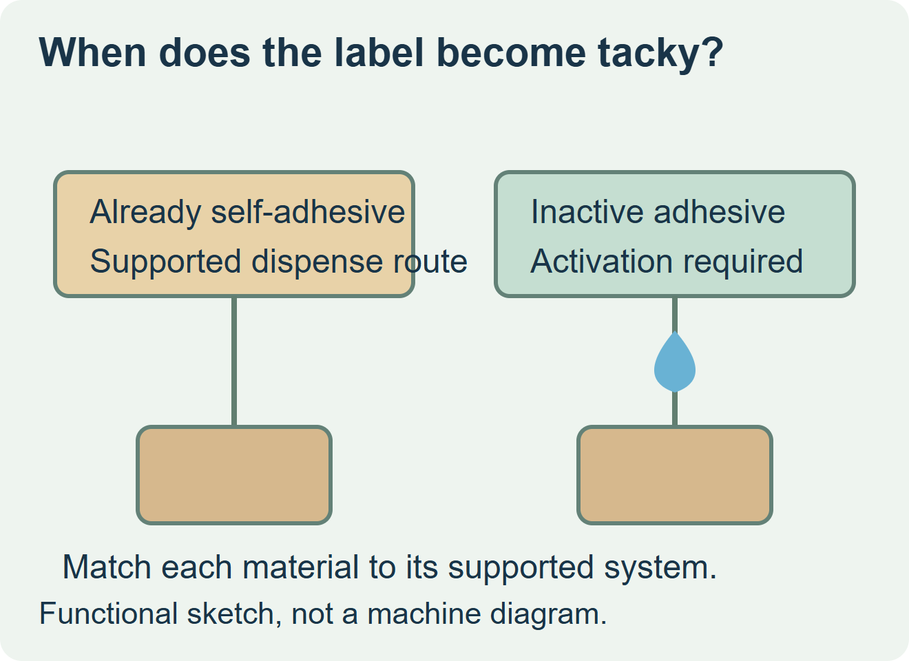
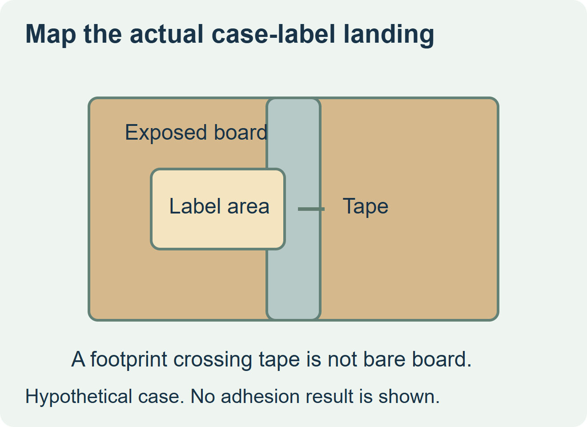

Keep an already self-adhesive label route when that is what the installed equipment and case surface support. Compare water-activated linerless labels only as a specified material-and-system proposal with a suitable landing. Do not order a roll simply described as linerless and expect the existing dispenser to make it adhesive.


Ask when the adhesive becomes active
Conventional pressure-sensitive labels leave a release liner with their adhesive ready for contact. Some linerless constructions are also already tacky and use a release-treated face to unwind. Another route carries initially inactive adhesive that becomes tacky during the supported application process. The lack of a backing does not identify which construction is being quoted.
HERMA’s linerless-system overview distinguishes its already self-adhesive Linerless Plus labels from water-activated InNo-Liner labels. The latter use a dedicated activation arrangement and are intended for absorbent paper/cardboard surfaces; HERMA excludes foil packaging for that named route. Treat these as manufacturer-specific boundaries, not a claim about all water-activated products.
| Actual case requirement | Route to investigate | What must be confirmed |
|---|---|---|
| Exposed absorbent board at the landing | Supported water-activated system or a suitable self-adhesive construction | Actual board, machine configuration, represented pack trial and print method. |
| Film, tape or coated area under the planned label | A construction supported for that surface, or a revised landing | Surface identity and supplier assessment; do not carry a bare-board result across the change. |
| Existing station has no supported activation arrangement | Its confirmed consumable, or a separately scoped system change | What equipment and commissioning the alternative offer actually includes. |
| Case family contains several landing surfaces | Separate identified requirements or an approved common landing | Representative cases and unresolved variants, rather than a single generic carton description. |


Inspect the finished shipping case
Mark the intended footprint on an erected, packed case. Distinguish bare board, printed or coated board, sealing tape and any surrounding film. An apparently brown panel can still have a finish that the material supplier needs to assess. Compare real case supplies and the normal dispatch condition; do not assume that the food inside determines the outer surface.
In a hypothetical snack dispatch operation, one case has an exposed board panel while a second is wrapped before the shipping label is applied. A bare-board demonstration does not approve the wrapped landing. The buyer can request a common exposed location where the packing operation permits it, or separate supported label proposals. Changing the landing must preserve the intended reading view and case identity.
Keep the equipment and consumable quotation together
Request the exact material, printing route, activation method where relevant, output handling and application scope. Have the equipment owner confirm the installed configuration and representative acceptance work. This guide supplies no water dose, chemistry, cleaning method or machine adjustment. A conventional roll specification does not authorize a retrofit.
Compare the complete accepted labeled-case workflow, including equipment or integration proposed, consumables, preparation and waste handling under actual offers. Do not transfer a manufacturer’s savings percentage to this food operation. ZFU can review the conventional printed-label requirement; specialist activation materials and systems require separate supplier confirmation.
Discuss the unresolved label requirement
Send case samples and landing map, exposed board/coating/film/tape surfaces, printer and applicator configuration, label content and quantities. Review food label options and prepare a label specification inquiry. The contact page opens an email draft and lists email or WhatsApp for attachments. Supply, proof options, testing, pricing and timing require project confirmation.